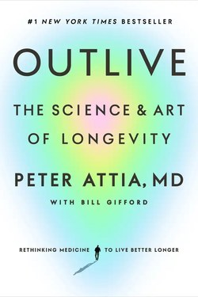

Library › Self-Improvement
Outlive — Summary & Key Lessons

The science and art of longevity — not just living longer, but living healthier, longer.
📖 OPEN THE FULL INTERACTIVE BREAKDOWN →🌐 Read it in Hindi, Hinglish, Gujarati, Tamil & 22 more languages — free, with audio.
💡 The Big Idea
Attia (physician and longevity practitioner) argues that medicine is reactive (2.0) — it waits for disease; longevity requires Medicine 3.0 — proactive, personalised, measured decades in advance. His 'four horsemen' are the big killers, and they are silent for years before they strike. His toolkit: exercise as the single most powerful longevity drug (with zones for VO2 max, strength, stability), nutrition without dogma, sleep as the foundation, and emotional health as the neglected tenth of the plan.
🧠 The 10 Key Lessons
Lesson 1: Medicine 3.0: The Century Strategy
Chapter 1: The New Medicine
Attia's framing: 2.0 medicine treats disease after diagnosis; 3.0 medicine treats risk before disease, the way an engineer maintains a bridge before it fails. Its methods: measure early (the 'century plan' — lab panels at 30, not 60), understand your individual risk, and act decades before symptoms. The counterintuitive truth: what you do at 40 decides what you are at 70.
📖 Example: A man who runs a full blood panel at 30 catches markers his father's generation discovered at 55 — too late. Read the full example →
⚡ Do this: Get one baseline health audit this year: blood panel, blood pressure, waist-to-height, VO2 max.
Lesson 2: The Four Horsemen
Chapter 2: The Killers
The four pathways that end most lives: atherosclerotic heart disease, cancer, neurodegenerative disease (Alzheimer's etc.), and metabolic disease (Type 2 diabetes). Their shared root: metabolic dysfunction driven by excess visceral fat and insulin resistance. Attia's point: each takes decades to develop and one day to announce itself. The horsemen are beatable — early.
📖 Example: Insulin resistance may precede diabetes by 15 years of silence — the longest warning window in all of medicine. Read the full example →
⚡ Do this: Know your four markers: ApoB, HbA1c, blood pressure, body fat distribution — and their trend.
Lesson 3: The Exercise Stack
Chapter 3: The Drug
Attia's hierarchy of exercise: stability (the forgotten floor — avoid injury, stay able), strength (muscle is the metabolic organ), and aerobic health (VO2 max — the strongest predictor of lifespan). The prescription: two or more strength sessions, and a mix of zone-2 (easy miles) and zone-5 (hard intervals) per week. If exercise were a pill, it would be the bestselling drug ever.
📖 Example: A 70-year-old with a high VO2 max has a lower mortality risk than a sedentary 50-year-old. Read the full example →
⚡ Do this: Build the minimum stack: one stability session, one strength session, one zone-2 and one zone-5 workout weekly.
Lesson 4: Nutrition Without Dogma
Chapter 4: The Fuel
Attia refuses the diet wars: the priority is protein (for muscle and satiety), caloric control without starvation, and metabolic flexibility — training the body to burn fat as well as glucose. His practical rules: eat for lean mass, manage insulin, use time-restricted eating if it helps you, and know your own response — the n of 1 is the only study that matters.
📖 Example: Two people thrive on opposite diets; the one who measures her own blood markers adapts better than either camp. Read the full example →
⚡ Do this: Track one metabolic marker (waist, energy, HbA1c) monthly and adjust your eating variables one at a time.
Lesson 5: Sleep and the Emotional Tenth
Chapter 5: The Foundations
Sleep is the cheapest, most powerful intervention — and the first thing we sacrifice. Attia also confronts the taboo of the final chapter: emotional health. Stress, loneliness and unprocessed pain kill like the four horsemen, and are rarely managed like them. His honesty about his own failures (a man who optimised everything but his relationships) is the book's most important lesson.
📖 Example: The executive who trains five hours and sleeps five is running his body like a car without oil. Read the full example →
⚡ Do this: Fix sleep before any supplement, and schedule one weekly hour for the relationships that actually matter.
Lesson 6: Stability: The Forgotten Pillar
Chapter 4: The Pillars
Attia's most underrated pillar is stability — balance, posture, joint control and movement quality. It is the foundation under strength and cardio: without it, the athlete with the biggest engine eventually stops training because something breaks. Stability is what lets you still deadlift, hike and play with your grandchildren at 80 — and it is the cheapest pillar to train.
📖 Example: The fit 50-year-old with a blown knee: his VO2 max meant nothing in the operating room. The pillar under the other three failed. Read the full example →
⚡ Do this: Ten minutes of stability work twice a week — single-leg balance, dead bug, farmer carry — before anything heavier.
Lesson 7: Bloodwork: The Century Plan
Chapter 2: Medicine 3.0
Attia's most actionable instruction: know your numbers at 30, not at 60. ApoB, Lp(a), A1c, fasting insulin, blood pressure — the dangerous markers run silently for decades before the event. The Century Plan is just this: a baseline panel at 30, and a trend, not a snapshot, ever after.
📖 Example: A 35-year-old learns his ApoB is 140 — thirty years of runway before his father's first heart attack at 65. The window only exists if you look. Read the full example →
⚡ Do this: Book one comprehensive panel this year; write the numbers where you will see them, and re-test annually to follow trends.
Lesson 8: The Four Horsemen of Chronic Death
Chapter 3: The Horsemen
Attia's framework: the diseases that will kill you are cardiovascular disease, cancer, neurodegenerative disease and metabolic disease — and metabolic dysfunction is the gateway that feeds the other three. The reframe is the entire book: do not wait for the disease to appear; attack the four in their silent decades, because by the time symptoms show, the war is already old.
📖 Example: Two 45-year-olds, identical blood pressure 'in range', but one with insulin resistance — the Horsemen are already in the stables for one of them. Read the full example →
⚡ Do this: Audit the four for yourself today: blood pressure, fasting glucose or HbA1c, waist-to-height ratio, sleep. That is your starting map.
Lesson 9: The Greatest Anti-Aging Drug: Muscles
Chapter 12: Muscle
Attia is ruthless on this point: muscle mass is the single best predictor of how well you age — it is your metabolic currency, your glucose buffer, your stability against falls, your organ of longevity. The prescription is specific: progressive overload, heavy and compound movements, and regular 'failure' — and the target is not aesthetics but reserve. You are not training for the mirror; you are training for the fall you might take at 80.
📖 Example: The 90-year-old who can stand from a chair without hands and the one who cannot — the difference was built decades earlier, one rep at a time. Read the full example →
⚡ Do this: This week: one session of heavy, compound lifting (or bodyweight to near-failure). Add one rep per session. Track the log.
Lesson 10: The Century Plan: Think in Decades, Act in Days
Chapter 18: The Plan (Medicine 3.0)
Outlive ends with the plan: define your 'century goals' — the physical and cognitive capacities you want at 80-100 — then reverse-engineer the day. Attia's Medicine 3.0 is actuarial thinking applied to health: you are the chief medical officer of your own long future, and the annual checkup is not the plan, it is the audit. The strategy is boring and it is the only one that works: decades of small, consistent, measured investments.
📖 Example: 'I want to hike with my grandchildren at 90' becomes a training plan — VO2 max now, strength now, balance now — not a wish. Read the full example →
⚡ Do this: Write your three century goals (physical, cognitive, emotional). Then write what TODAY must contain. Start the audit next month.
✅ 5-Step Action Plan
- Run one baseline health audit this year.
- Track the four horsemen markers and their trend.
- Build the minimum exercise stack weekly.
- Do one nutritional experiment with one measured marker.
- Fix sleep first; schedule one relationship hour weekly.
⚠️ When This Doesn't Work
Attia's approach is intense, expensive and practitioner-oriented; claims about VO2 max and longevity are correlational more than causal, and his personal protocol is not a prescription. Use it as a map, with your own clinician as the guide.
💀 The Graveyard Proves It
🍬 The Sugar Industry — The Sponsors Who Wrote the Nutrition Science. Burn: Decades of misdirected dietary policy and a global pandemic of metabolic disease Read the full case study →
💬 Best Quotes from Outlive
- “Exercise is the most potent longevity drug we have.”
- “The goal of medicine 3.0 is to slow the decline, not just treat the disease.”
- “You can't outrun bad genetics — but you can outrun bad decisions.”
Interactive version: mark lessons as read, listen in your language, share quote cards.